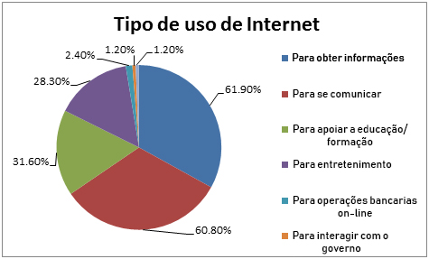

Essa página contém conteúdos relacionados com o tema!
Confira abaixo conteúdos como: Gráficos, Tabelas, entre outros.

O gráfico acima representa em quais atividades a Internet é mais usada.
Nessa tabela, é apresentado informações sobre as áreas da tecnologias que terão mais impacto nos negócios.
Obs: informações de 2015.
Nesse vídeo, é feito perguntas ao ChatGPT, mesmas perguntas feitas para pessoas.
É comparado as respostas, tendo como objetivo mostrar que muitas das vezes a tecnologia
pode responder de forma muito parecida de como um humano responderia.
Esse gráfico nos mostra a Evolução da Quantidade de Usuários de Mídias Socias no Mundo,
mostra ainda que o crecimento foi impactante, sendo essa evolução em bilhões.
Esse mapa de 2021, nos indica a porcentagem da quantidade de usuários da Internet no mundo.
Conseguimos ver que na maioria dos casos, é ultrapassado os 50%.
Já nesse gráfico de 2023, é mostrado o uso estimado de Internet pelas pessoas no Mundo.
Indicando assim, com um cálculo rápido, que é gasto cerca de 16,75 horas por dia.
Tudo isso mostra, por fim, que a sociedade está completamente dependente da tecnologia em geral.